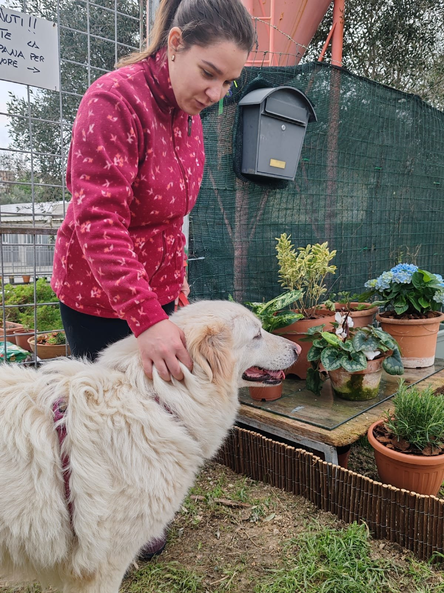
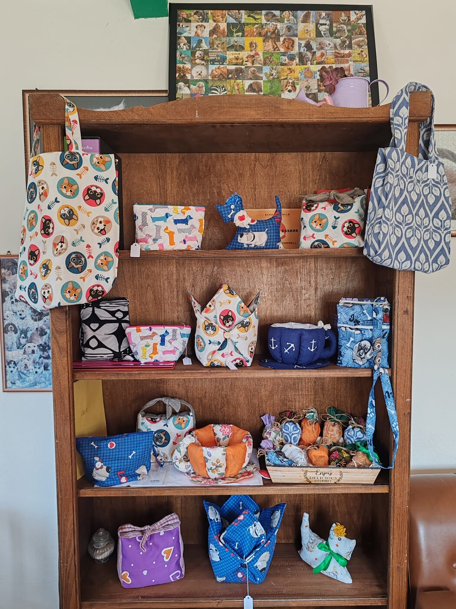
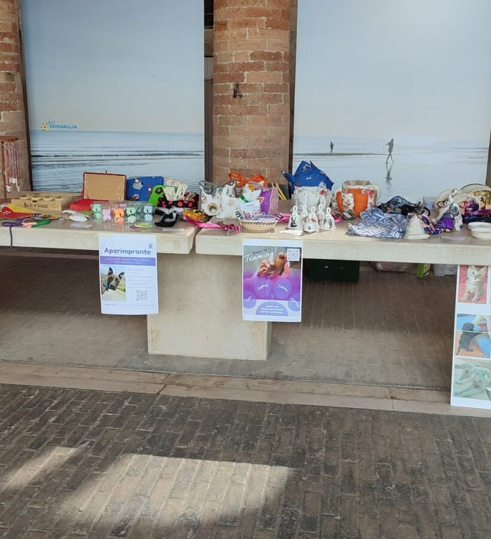
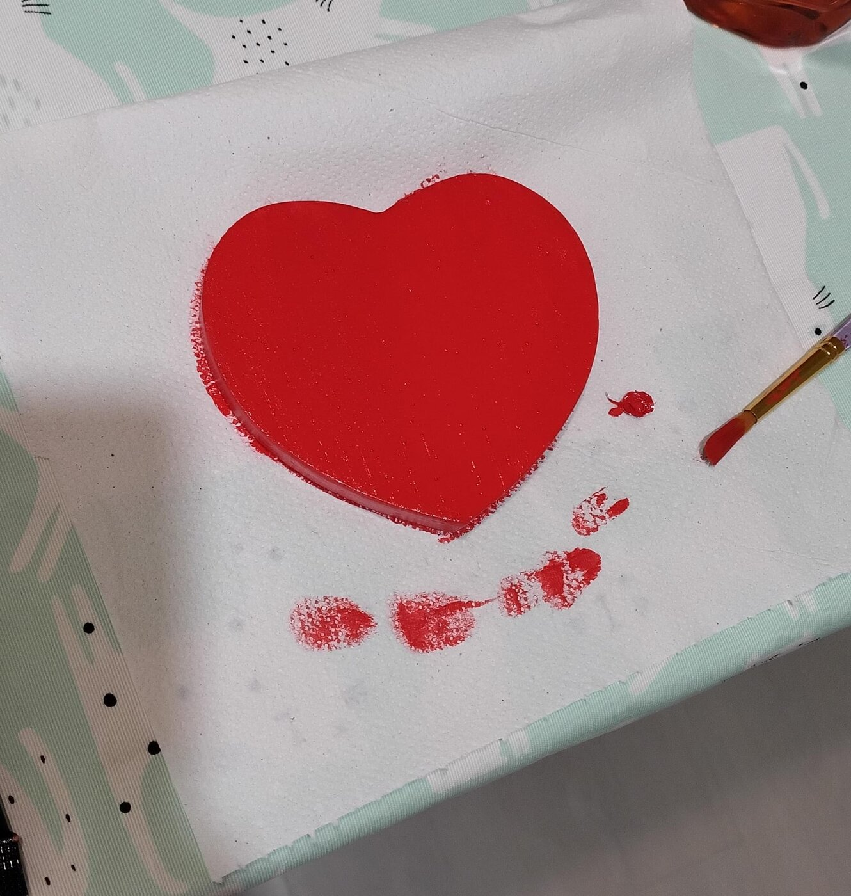

Non stiamo cercando solo "amanti degli animali". Stiamo cercando persone disposte a mettersi in gioco, davvero.
Fare volontariato in canile non è solo passeggiate e coccole. È impegno concreto, ogni giorno.
Significa pulire i box, preparare e distribuire i pasti, occuparsi delle terapie, mantenere gli spazi dignitosi e sicuri. Significa sporcarsi le mani, fare lavori fisici, esserci anche quando piove, fa freddo o è semplicemente faticoso.
Significa anche imparare a conoscere i cani per quello che sono: ognuno con il suo carattere, la sua storia, i suoi tempi. La relazione non è automatica, si costruisce con rispetto e consapevolezza.

Ognuno porta con sé qualcosa e ogni cosa fa. Ecco tutte le aree in cui serve una mano.
Pulizia dei box, preparazione e distribuzione dei pasti, somministrazione delle terapie. È la base di tutto: senza questo, niente funziona.
Uscite, socializzazione, osservazione. Sempre in maniera consapevole, perché ogni cane ha il suo carattere, la sua età e le sue peculiarità.
Piccoli lavori di aggiustaggio, messa in sicurezza dei box, miglioramento degli spazi. Un canile curato è più invitante anche per chi viene in visita.
Realizzare oggetti da vendere ai mercatini solidali: abbigliamento, accessori, decorazioni. Sono ingressi preziosi per sostenere le spese dell'associazione.
Presenza ai mercatini, giornate di adozione, iniziative solidali. E se hai voglia di organizzarli, ancora meglio: c'è sempre bisogno di idee nuove.
Social, fotografia, scrittura, grafica. Raccontare quello che facciamo è fondamentale per trovare adozioni, fondi
e nuovi volontari.
Trasformiamo insieme la creatività in un gesto concreto di solidarietà.
Stiamo organizzando mercatini solidali e abbiamo bisogno di oggetti unici da proporre: abbigliamento, accessori, soprammobili, decorazioni, quadri, creazioni per la casa — e anche per i nostri amici animali.
Se hai passione, talento e un po' di tempo da dedicare, il tuo contributo può fare davvero la differenza. Aiutaci a trasformare la creatività in un gesto concreto di solidarietà.



Compila il modulo e ti ricontatteremo presto. Parlaci di te: non servono esperienza o competenze particolari, basta la voglia di esserci.
Preferisci scriverci direttamente? impronte.ass@gmail.com oppure WhatsApp